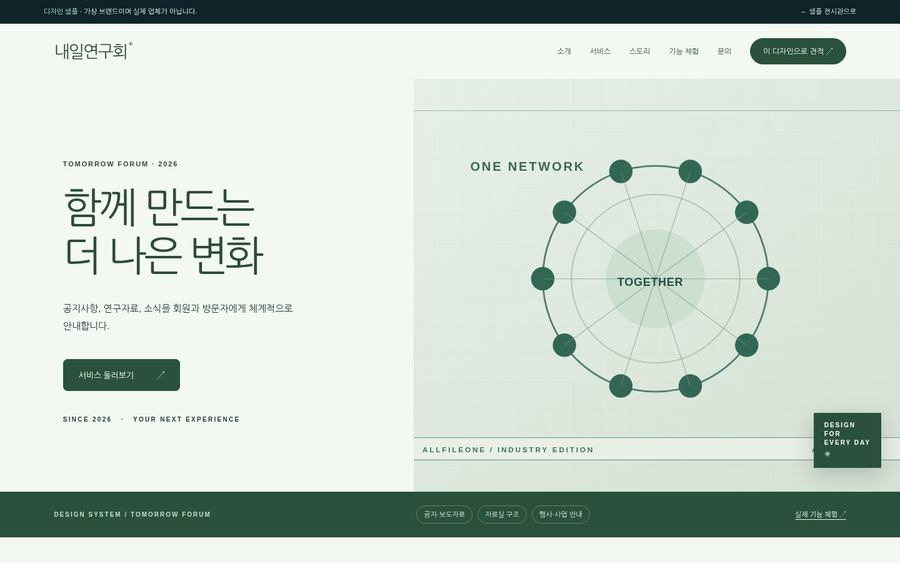
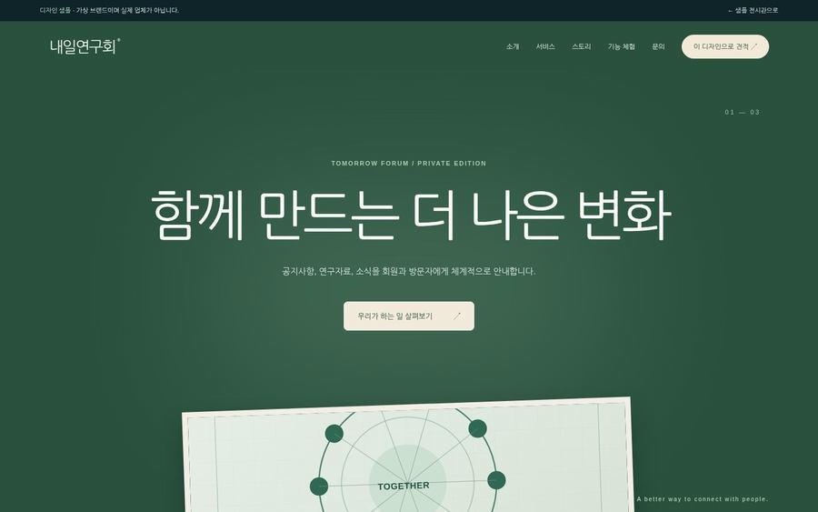
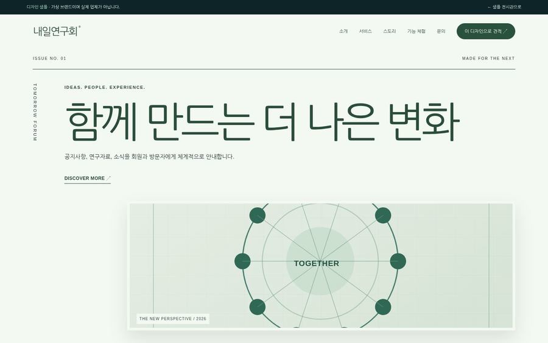

01 / MODERN
협회 · 회원을 위한 정보 · INDUSTRY / V86
공지와 자료검색, 세미나, 신청 절차를 한곳으로 정리합니다. 실제 회원 권한과 회비 납부는 별도로 설계합니다.
01 / WHAT YOUR CUSTOMERS NEED
사업 목적을 고르면 관련 시연 기능이 강조됩니다. 선택은 이 브라우저에서만 처리됩니다.
현재 목표: 자료를 쉽게 찾기
02 / THREE REAL HTML DESIGNS
실제 만들어진 HTML 데모를 엽니다. 각 디자인은 레이아웃과 정보의 흐름이 다릅니다.



03 / INDUSTRY FUNCTION SHOWCASE
7개는 브라우저에서 움직이는 가상 시연, 1개는 현재 개발되지 않은 실제 운영용 옵션입니다.
가상 협회 공지와 자료 분류
직접 조작하기 ↗회원용 가상 행사 일정
직접 조작하기 ↗일반적인 가입 절차를 시뮬레이션
직접 조작하기 ↗운영 단체마다 기준이 달라 실제 접수는 별도
직접 조작하기 ↗행사 일정·신청·참석 상태 관리
직접 조작하기 ↗회원사의 채용 공고 등록·검색
직접 조작하기 ↗공고·서류·회원정보 확인 체크, 실제 자격 심사 아님
직접 조작하기 ↗회원 자격 및 등급별 이용 권한 제공 실제 사용자·거래 데이터 연결은 구현·견적·보안을 별도 협의해야 합니다.
제작 범위 검토 ↗04 / WHAT MAKES DELIVERY REAL
실제 고객 납품 전 검수·운영 조건을 서면으로 확정해야 합니다.
실제 고객 납품 전 검수·운영 조건을 서면으로 확정해야 합니다.
실제 고객 납품 전 검수·운영 조건을 서면으로 확정해야 합니다.
05 / PREPARE THE REAL PROJECT
협회 · 단체에 필요한 콘텐츠·운영·기능을 정리해 보세요. 제작 범위 협의서를 작성하더라도 메일은 자동 전송되지 않으며, 별도의 확정 견적이나 계약이 아닙니다.
제작 준비 0/4개 확인
체크 상태는 서버로 전송하지 않습니다.
EXPLORE OTHER SECTORS